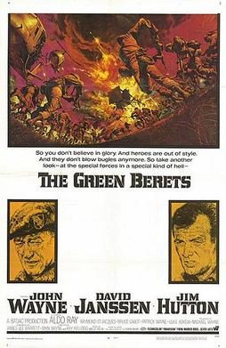

The Green Berets
Studio: Batjac Productions
Starring: John Wayne, David Janssen, Jim Hutton
Director: John Wayne, Ray Kellogg, Mervyn LeRoy
Writer: James Lee Barrett
Producer: John Wayne, Michael Wayne
The Green Berets is a 1968 American war film directed by John Wayne and Ray Kellogg, and starring Wayne, David Janssen and Jim Hutton, based on the 1965 novel by Robin Moore. Much of the film was shot in the summer of 1967.
Trivia
- Based on The Green Berets (1965 non-fiction work by Robin Moore).
- Columbia Pictures, having bought the book's pre-publication film rights, was not able to produce a script that the Army would approve, while producer David L. Wolper, who also tried to buy the same rights, could not obtain financing to make the movie.
- A screenplay was written by George Goodman who had served with the Special Forces in the 1950s as a military intelligence officer and had written a 1961 article about the Special Forces called The Unconventional Warriors in Esquire magazine.
- Columbia sent Goodman to South Vietnam for research.
Filming Locations
- Georgia
- Much of the film was shot in the summer of 1967 (before the Tet Offensive) at Fort Benning, Georgia.
Previous Showings
1 Run • 1 Festival
All runs on record (1):
- May 29, 2009John Wayne